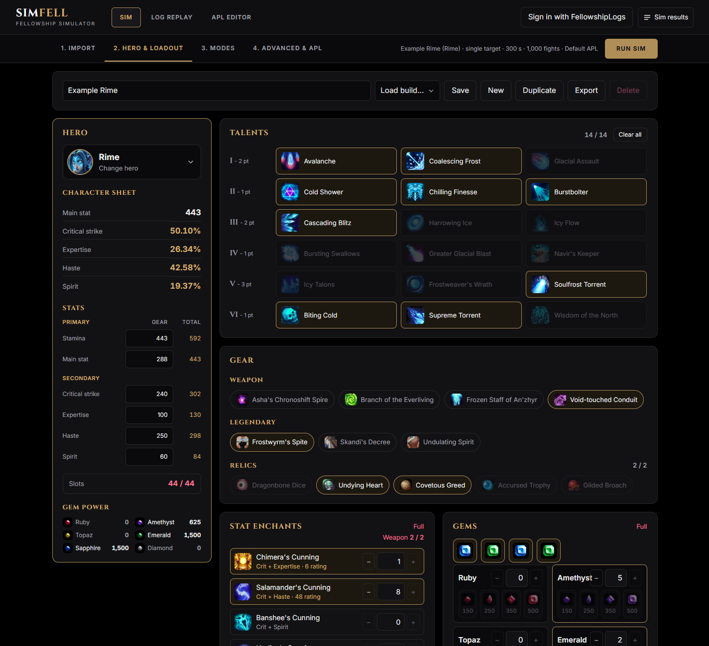
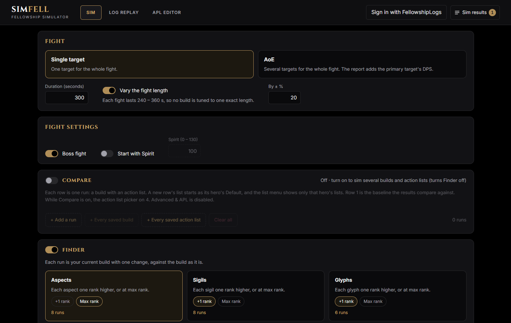
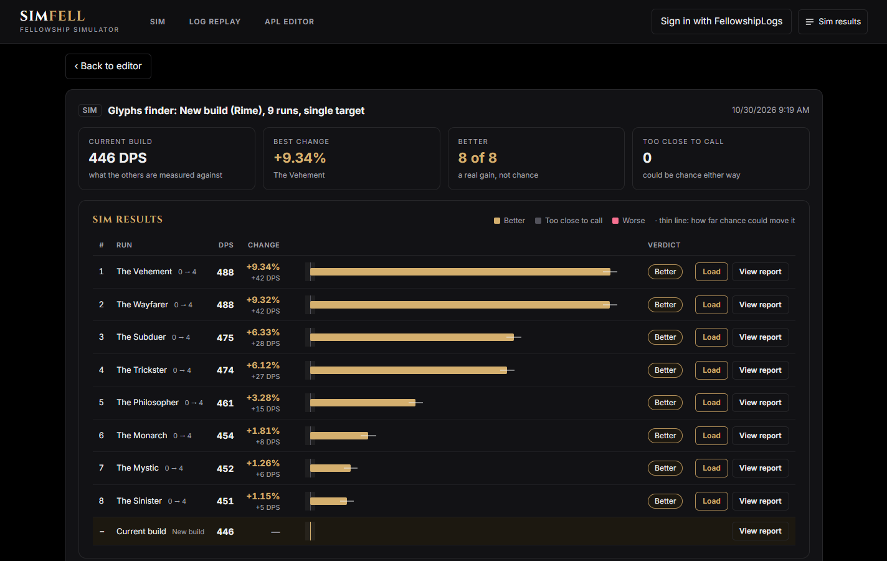
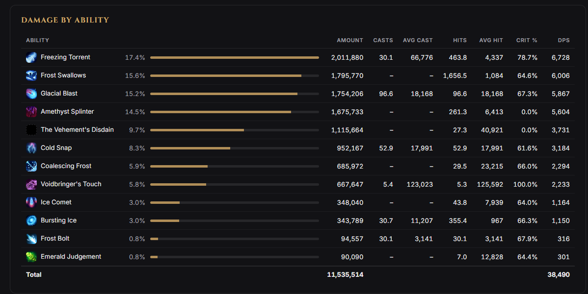
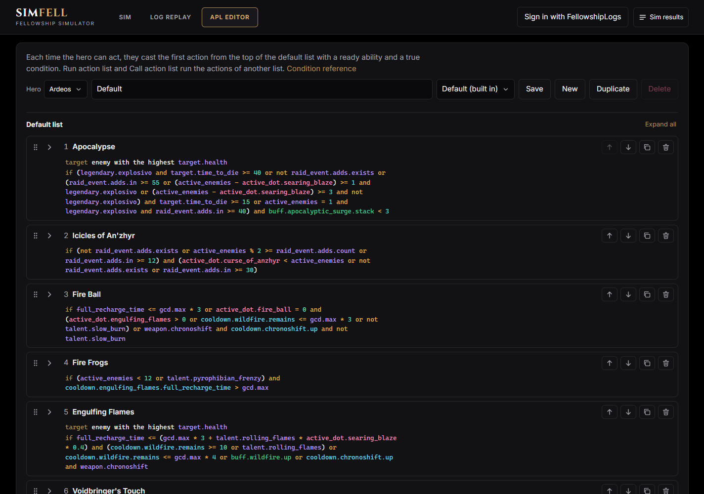

SimFell is a combat simulator for Fellowship. Here's what it can do.
Build your hero from scratch in the builder, or import one.

Sim different builds and action lists against each other, or let Finder work out your next aspect, sigil, glyph, relic, gem or talent.


View damage breakdowns, example cast sequences and more, in a detailed report you'll find familiar.

A sim is only as good as its APL, so we made it easy to write your own in the APL editor.
